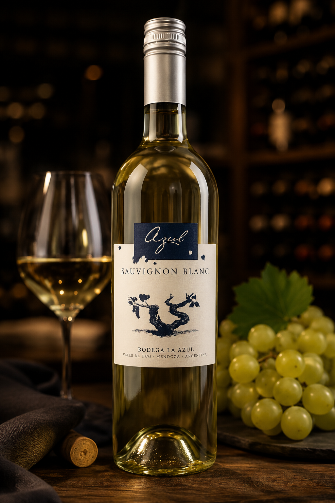

Bodega La Azul
Valle de Uco, Mendoza, Argentina.
Sauvignon Blanc
👁️ VISTA
Color amarillo brillante, con delicadas tonalidades verdosas.
👃 NARIZ
Intenso perfil cítrico, con aromas que recuerdan al pomelo rosado y la lima, acompañados por una característica nota de ruda.
👄 BOCA
Entrada fresca y cítrica, de sabores intensos, con una expresión vibrante y un final prolongado.
Ideal para acompañar frutos de mar, pescados preparados de manera sencilla y platos fríos con salsas suaves a base de hierbas.
8°C a 10°C
Consejo VINNOVA: servir bien fresco, evitando temperaturas excesivamente bajas para conservar sus aromas cítricos y su expresión varietal.
Bodega La Azul se encuentra en el Valle de Uco, Mendoza, una de las regiones vitivinícolas más reconocidas de Argentina. Su propuesta combina tradición familiar, viñedos de altura y una producción enfocada en expresar el carácter propio de cada varietal.
Elegido para la edición de septiembre de VINNOVA – CEPAS WINE CLUB por su frescura, personalidad y capacidad de ofrecer una expresión diferente dentro de una selección boutique.
Selección recomendada por su frescura, equilibrio y relación entre identidad y disfrute.